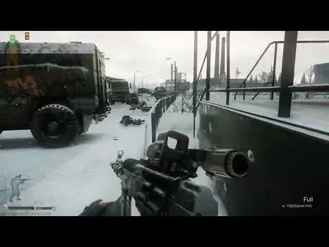
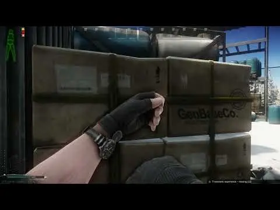

anOrangeDoggo's SAIN Presets
- Downloads
- 3,326
anOrangeDoggo’s SAIN Presets
Just want to share the repo of my presets along with the commit history in the off chance it might help people make their own. I might make a wiki or something, idk. SoonTM. Maybe never.
If you have questions, try look through the commit history. Or, search through the Discord conversations. Many topics related to the core gameplay aspects are mostly already answered.
I also want to give a shout-out to Solarint, the maker of SAIN, and all the maintainers and contributors for the amazing mod, and the SPT devs for years of SPT support.
How Are These Compared to XYZ
My presets are all Default SAIN through and through, so you should be expecting standard SAIN experience in the bot behavior department.
The only things I made significant changes to are related to aiming, shooting, and hearing stuff. And a bit on the vision speed and some other stuff I probably forget. Again, it’s all in the commit history.
Many areas are standardized to Default, with mostly aiming and shooting varied for Hard and Challenging. Challenging is more difficult than Hard (I nO EnGlIsH SpOkE) as it offers substantially tighter shot grouping and faster aim time. Hard is essentially Default with basic knobs turned a bit more.
Overall, I don’t really know. I haven’t played any other presets for weeks if not months now on top of jumping in and out of other games. All I can say is that they all should be easier than Twitch Players in the sense that they don’t give bots eagle eyes and extreme reaction time, and harder than SAIN’s Default because bots shoot more accurately. That leaves only one way to find out.
Or, check out my gameplay of Challenging 0.2.1 (YMMV, obviously):

Note that bots walking around with their guns down aren’t part of my presets or SAIN. It’s an in-development mod by the creator of HollywoodFX and HollywoodCam. I highly recommend these mods.
Here’s a gameplay with just SAIN, Acid’s bot mods, and other QoL, item, etc mods of my choice. I think this setup should be pretty close to what average SPT enjoyers have.

Before You Install
DO NOT report any bug or strange behaviour to SAIN’s maintainers during the use of my presets.
DO NOT view my presets in the in-game GUI. Simply select one without expanding/droping down anything. Some of the values are outside of the acceptable ranges and, upon revealing through the GUI, will be clamped to what are actually allowed. Although, unless you hit Save or Export All, it should not be affecting the presets. SAIN will work just fine even if some of the values are a bit odd.
Nothing less of another mod will save you from head-eyes if that’s your kryptonite. I personally increase the head’s health to 85 via Server Value Modifier, so I can survive small to intermediate, high pen rounds. But anything bigger than that I’m cooked.
If you find any issues, like bots not moving, are blind and/or deaf, etc, chances are you already have that before you even download the presets. Make sure everything is up-to-date and your standard SAIN is already working normally. Ombarella is known to make bots go blind if not being configured correctly. I personally don’t use it.
Installation
If you download directly from the Forge, you should get the latest version of each preset all bundled in one zip and properly structured. You can extract the zip directly into your SPT folder.
If you’re on the GitHub page, on the right side, under Releases, click Tags. Then download any version 0.2.0 or newer of the source code of your choosing preset. Then extract anOrangeDoggo - <difficulty> to your SAIN’s preset folder.
The path should look like this: <SPT>\BepInEx\plugins\SAIN\Presets\<Preset Folder>. For example, SPT 4.0\BepInEx\plugins\SAIN\Presets\anOrangeDoggo - Hard.
Since I have many presets available at once, each will have its own versioning to track the development, which is also independent of the others. The versioning of the bundle on the Forge will be incremented only when I decide to include any new version of a preset and thus does not represent the actual versioning.
See Also
and other presets since SPT 3.8-3.9 (don’t use them in 3.11 or 4.0, though).
I learned a lot from these presets by going through their repo. Be sure to check them out, too!
Recommended Mods
I have my mod list on the GitHub page and I recommend them all. However, some of them directly impact my experience with bots. For example:
Acid’s Progressive Bot System affects bots’ gears and thus how each Personality will be assigned. Better gears means higher chance of Chad and GigaChad, for example.
Acid’s Bot Placement System controls how bots spawn. The default settings should work just fine.
NerfBotGrenades since SAIN’s grenade settings aren’t working yet.
Recoil Rework BSG’s recoil is boring. I use 1.0 for vertical recoil.
Dynamic Maps easily ESP your way to gunfights! Also invaluable for preset tuning.
Fontaine’s FOV Fix I do enjoy zoom-in feature of Arma and Insurgency. This makes iron sights usable at longer ranges. By default, it does not do any zoom when you ADS.
Agony SFX bullet wounds aren’t ant bites.
Audio Accessibility Indicators if you’re playing at night, or have trouble hearing things in Tarkov in general.
Increase Climb Height in case you want to out-maneuver the bots.
Version
0.2.0
All Presets
- Update presets to SAIN v4.4.0.
- Revert boosted audio distance from previous version of SAIN. It is not necessary anymore in SAIN v4.4.0.
- Adjust audio occlusion multipliers and (new) base footstep distances to make final sound ranges closer to what my ears can hear.
- Reduce max footstep distances and hear chances. (Experimental. Not sure how it will effect bots if at all.)
Challenging
- Bump scatter bonus for red dots and optics, especially the latter.
This version contains:
- Default v0.3.0
- Hard v0.3.0
- Challenging v0.3.0
Version
0.1.0
Initial release of development builds.
Audio distance in this version is boosted specifically for SAIN v4.3.1. If you use this version in SAIN v4.4.0+, revert global hearing distance to default.
This version contains:
- Default v0.2.0
- Hard v0.2.0
- Challenging v0.2.1